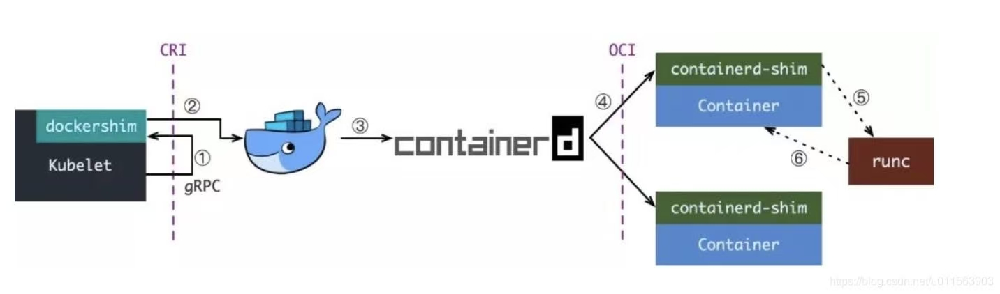

-
Kubelet 通过 CRI 接口（gRPC）调用 dockershim，请求创建一个容器。CRI 即容器运行时接口（Container Runtime Interface），这一步中，Kubelet 可以视作一个简单的 CRI Client，而 dockershim 就是接收请求的 Server。目前 dockershim 的代码其实是内嵌在 Kubelet 中的，所以接收调用的凑巧就是 Kubelet 进程；
-
dockershim 收到请求后，转化成 Docker Daemon 能听懂的请求，发到 Docker Daemon 上请求创建一个容器。
-
Docker Daemon早在 1.12 版本中就已经将针对容器的操作移到另一个守护进程——containerd 中了，因此 Docker Daemon 仍然不能帮我们创建容器，而是要请求 containerd 创建一个容器；
-
containerd 收到请求后，并不会自己直接去操作容器，而是创建一个叫做 containerd-shim 的进程，让 containerd-shim 去操作容器。这是因为容器进程需要一个父进程来做诸如收集状态，维持 stdin 等 fd 打开等工作。而假如这个父进程就是 containerd，那每次 containerd 挂掉或升级，整个宿主机上所有的容器都得退出了。而引入了 containerd-shim 就规避了这个问题（containerd 和 shim 并不是父子进程关系）；
-
我们知道创建容器需要做一些设置 namespaces 和 cgroups，挂载 root filesystem 等等操作，而这些事该怎么做已经有了公开的规范了，那就是 OCI（Open Container Initiative，开放容器标准）。它的一个参考实现叫做 runC。于是，containerd-shim 在这一步需要调用 runC 这个命令行工具，来启动容器；
-
runC 启动完容器后本身会直接退出，containerd-shim 则会成为容器进程的父进程，负责收集容器进程的状态，上报给 containerd，并在容器中 pid 为 1 的进程退出后接管容器中的子进程进行清理，确保不会出现僵尸进程。